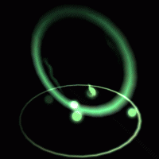

Basic Render Settings¶
Overview¶
This section explains about the "Basic Render Settings" window, which provides common parameters that manipulate how the current node's particles are drawn.
Parameter¶
Texture (color/distortion)¶
Sets the color image or distortion image to be used for displaying the particle. As the name suggests, for the color image, the image/pattern/etc will displayed almost exactly as it appears in the source. In most cases, you will use color images. As for the distorted image, we will explain this further below in the distortion section.
Blend¶
Specifies the method of alpha blending applied when displaying the particle. This controls how drawn images will be composited when they are on top of each other, such as translucency, addition, or subtraction.
Filter¶
Specify the filtering method to be applied when displaying the particle.
Depth Set¶
Specify whether to write depth information when displaying particles. After writing the depth information, if you draw the particles for which the depth test is enabled, if the particles are deep inside, they will not be drawn.
Depth Test¶
If the depth test is valid, particles will not be drawn deeper than the written depth information.
Fade-In¶
When a particle is first spawned, it fades in over a duration until fully visible.
Fade-Out¶
When a particle is about to be despawned, it fades out over a duration and disappears.
UV¶
In the color/distortion image, this specifies the region of the image actually used when displaying the particle. The range used can be changed over time, allowing you to scroll or animate the image. The units used in these parameters for specifying the area are pixels.
Animation¶
Play animation based on images with animations arranged in succession.

Start time(1.3 or later)¶
Specify the time of animation to start playing. For example, you can play from the second piece with animation composed of 4 images.
Scroll¶
Move the UV range at a constant speed.
Inherit color¶
Specify whether the color of the parent particle affects the color of the child's particles. In case of inheritance of color, the color of the parent's particle multiplied by the color of the child's particle becomes the color of the final child's particle. When "Only on create" is selected, the color of the parent particle when the child particles are generated is always applied.
Never | Only on create | Always |
 |  |  |
Distortion¶
This is explained in the distortion section below.
Distortion Intensity¶
This is explained in the distortion section below.
About Distortion¶
If the distortion setting is enabled, the particles will distort anything behind it. The way the distortion is applied depends on the pixel data of the distorted image, and the distortion intensity.
In the color of the distortion image, red and green channels are used as distortion information. Both of them do not distort at all when the value is 127. When red is 127 or more, it is distorted to the right, and when it is less than 127 it distorts to the left. When green is 127 or more, distortion is in the upward direction and distortion is in the downward direction when the green is less than 127. However, this up / down / left / right direction depends on the drawing method. For example, in the case of a sprite, the top, bottom, left, and right directions are those perpindicular to the sides of the image's rectangle.
The color of each drawing weakens the strength of distortion. Values range between 0 and 255. Red affects left and right, and green affects up and down.
Distortion strength adjusts the strength of all colors. When it reaches 0, no more distortion will be applied.
With distortion | No distortion |
|  |  |
In the case of the default settings, the distortion distorts only the background without own effect itself. To distort other nodes of own effect with distortion, specify the drawing priority from the depth panel. Nodes with drawing priority less than 0 are distorted with the background due to the distortion of the node of own effect.